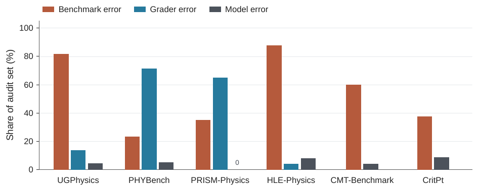
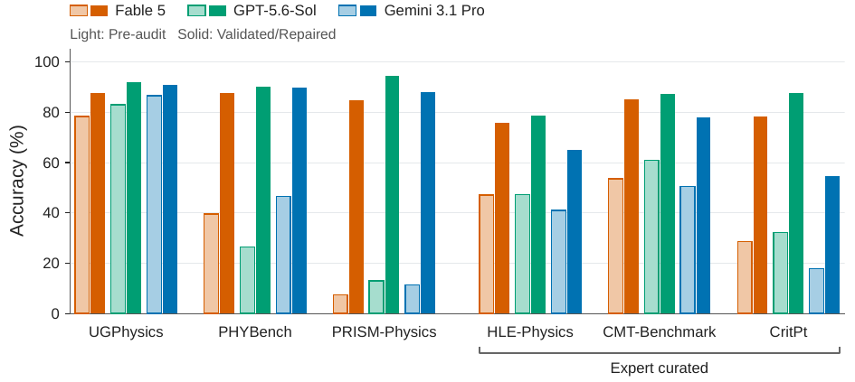

Audit expert de 6 benchmarks de physique : sur 250 réponses rejetées auditées, 95,2 % des rejets ne sont pas des erreurs du modèle (57,2 % items défectueux, 38,0 % erreurs de correcteur, 4,8 % erreurs de modèle) ; après exclusion/réparation, les scores passent p.ex. de 47,3 % à 78,7 % (GPT-5.6-Sol, HLE-Physics, mean@4) [Abstract, §5, Tab. 3].
Claim principal, formulé précisément : sur des questions fermées, text-only, à réponse finale vérifiable, le taux d'erreur réel des modèles frontière est désormais inférieur au taux de défaut des benchmarks, donc l'essentiel de l'erreur mesurée est celle du benchmark, pas du modèle [§Discussion]. Corollaire que les auteurs assument : « Frontier models are not failing these physics problems. The benchmarks are failing to pose them. » [§Discussion].
⚠️ Nuance que le titre/abstract écrasent : la majorité stricte n'est pas « erreur de correcteur » (38,0 %) mais « erreur de benchmark » — énoncé ambigu ou solution de référence fausse (57,2 %) [Tab. 3]. Les erreurs de correcteur ne sont majoritaires que là où l'évaluateur est rule-based : PHYBench 71,43 %, PRISM-Physics 64,86 % [Tab. 3, Fig. 2].
| Benchmark | Évaluées | Rejetées (auditées) | Benchmark error | Grader error | Model error | Retenues |
|---|---|---|---|---|---|---|
| HLE-Physics | 202 | 98 | 86 (87,76 %) | 4 (4,08 %) | 8 (8,16 %) | 116 |
| PHYBench | 100 | 56 | 13 (23,21 %) | 40 (71,43 %) | 3 (5,36 %) | 87 |
| PRISM-Physics | 100 | 74 | 26 (35,14 %) | 48 (64,86 %) | 0 (0,00 %) | 74 |
| UGPhysics | 100 | 22 | 18 (81,82 %) | 3 (13,64 %) | 1 (4,55 %) | 82 |
| Pooled | 502 | 250 | 143 (57,20 %) | 95 (38,00 %) | 12 (4,80 %) | 359 |
| dont public-source seuls | 300 | 152 | 57 (37,50 %) | 91 (59,87 %) | 4 (2,63 %) | 243 |
Hors pool (couverture d'audit différente, toutes les questions auditées quel que soit le verdict pré-audit) : CMT-Benchmark 30/50 questions avec benchmark error (29 réparées, 1 exclue → 49 retenues), 2 model errors, grader errors indéterminables ; CritPt 56 auditées sur 71, 21 benchmark errors (19 réparées, 2 exclues → 54 retenues), 5 model errors, grader errors indéterminables [App. B.2.2, B.2.3, Fig. 2]. - Filtrage : pas de pass@k du modèle de base pour construire les tâches, mais filtrage de l'audit par l'échec du modèle : HLE jusqu'à 5 tentatives (outils activés à la 5ᵉ), arrêt au premier succès ; PHYBench jusqu'à 5 tentatives sans outils, arrêt au premier EED = 100, réponse auditée = celle de meilleur EED ; PRISM et UG : une seule tentative par problème [App. B.3]. - Curriculum : non applicable. - Contamination : discutée qualitativement (les 3 benchmarks public-source sont « susceptibles » de contamination, d'où le focus sur les expert-authored) [§3] — jamais mesurée. - Données SFT/IFT : non applicable. - Coût humain : ~38 data auditors (PhD students Yale, endossés par leur superviseur) + 12 physics advisors [App. Author Contributions]. Interface : 30 reviews demandées par contributeur, jusqu'à 15 skips hors domaine [App. D.2]. 446 annotations produites pour 250 questions. Heures / coût monétaire : non précisé. Financement : Yale Office of the Provost AI Initiatives + don de Jump Trading Group [§Acknowledgments] (⚠️ Lucas Baker, advisor du projet, est affilié Jump Trading — conflit d'intérêt déclaré mais la direction du résultat, « les modèles sont meilleurs qu'annoncé », va dans le sens de l'intérêt d'un fonds qui les utilise).
⚠️ Le harness n'est pas constant entre pré-audit et corrigé (voir §7.0) : sur PHYBench/PRISM/UG l'évaluateur change (rule-based → juge LLM adapté de HLE) en même temps que les questions défectueuses sont retirées. Seul CMT-Benchmark garde le même évaluateur avant/après : « The same HLE-adapted evaluator is used before and after correction. The corrections are to the benchmark materials only. » [§4.2.2]. C'est le seul contraste propre du papier.
gpt-4o-2024-08-06 par un modèle frontière pour améliorer la reconnaissance d'équivalence [App. B.1.3] ;mean@4 (moyenne sur 4 tentatives) et pass@4 ; pré-audit CritPt = mean@5 d'Artificial Analysis [§3].Non applicable : aucun entraînement, aucun RL, aucun hyperparamètre d'optimisation. Les seuls réglages sont l'effort de raisonnement (High/Max) et le budget de tentatives (4 ou 5) [App. A].
Ce que le papier catalogue, ce ne sont pas des failure modes de politique mais de vérifieur et de données. Typologie, avec exemple → détection → correction :
A. Erreurs de correcteur (le modèle a raison, l'évaluateur dit non) [§4 Fig. 3, App. C.2]
1. Dénominateur non rationalisé : P/(3√6) vs (√6/18)P — EED 0,0, score binaire 0 [Fig. 3, PHYBench pb 140].
2. Ordre des facteurs : 5mRω² vs 5mω²R — EED 0,0 [App. ex:grader-phy].
3. Réécriture triviale : (bV₀/m)t vs bV₀t/m ; note du relecteur « The two responses are identical » [App. ex:grader-prism].
4. Équivalence dans la limite demandée + convention de signe : réponse du modèle F(x) = -(3E(0)x/n²ℓ²)·exp(3x²/2n²ℓ²), référence 3E(0)x/(nℓ)² ; identiques à petit x, au signe (attraction vs module) près — score binaire 0 [App. ex:grader-hle]. ⚠️ Celui-ci est un cas limite : l'équivalence n'est vraie que dans la limite, et le juge aurait pu légitimement hésiter.
→ Correction : remplacer l'évaluateur rule-based par le juge LLM du pipeline HLE.
B. Erreurs de benchmark (l'item est cassé) [App. C.1]
1. Référence identiquement nulle : l'expression de référence PHYBench pour u_min se simplifie en 0 ; note : « Reference answer equals 0, which is incorrect ».
2. Question sous-déterminée : PRISM, temps de vol d'un électron à choisir parmi 3 valeurs sans aucune donnée de distance ni de vitesse ; « Not enough information is given in the problem ».
3. Énoncé qui ne dit pas ce qu'il veut : UGPhysics, amortissement critique — « Perhaps the question meant "without overshoot", but it didn't state that ».
4. Arithmétique fausse dans la référence : HLE, référence −√2 au lieu de 2−√2, algèbre correcte mais arithmétique finale fausse.
5. Convention/normalisation non fixée : CritPt 44 (Kitaev honeycomb), le hamiltonien n'est pas écrit → σ vs S = σ/2, énergies différant d'un facteur 4 → réponse numérique non définie [Fig. 4].
6. Hypothèses manquantes dans un QCM : CMT pb 31 — dimension d'espace, comptage des liens, corrélateur connexe vs ordinaire, restriction g = 0 ; après réparation la réponse de référence change (a;c → a;b;c) et devient celle du modèle [Fig. 5].
→ Correction : exclusion (HLE/PHYBench/PRISM/UG) ou réparation de l'énoncé + de la référence (CMT 29 réparées/1 exclue ; CritPt 19 réparées/2 exclues).
C. Vraies erreurs de modèle qui subsistent [App. E]
- CritPt 18 : les 4 tentatives supposent les polarisabilités réelles alors que l'énoncé ne l'impose pas → cos(kd₀) au lieu de Re[α₁α₂e^{ikd₀}] ; cas particulier présenté comme général. Failure mode intéressant et très transférable : hypothèse implicite non justifiée qui rend la réponse localement cohérente.
- Les auteurs rapportent aussi, sans chiffres, que des harnesses agentiques de type « conjectures ouvertes en maths » appliqués à des problèmes ouverts de physique « make considerably less progress », et aucun problème ouvert n'a été résolu [§Discussion]. C'est un contrepoids explicite à la saturation annoncée.
Mécanisme général, argumenté §5 et §Discussion : un correcteur défectueux se trompe surtout en rejetant des solutions correctes ; quand le modèle est faible il en produit peu, le score mesuré reste proche du vrai. À mesure que la capacité monte, les bonnes réponses deviennent fréquentes, les erreurs du correcteur s'accumulent, et l'écart mesuré/vrai se creuse. Le taux d'erreur mesuré d'un modèle ne peut pas descendre sous le taux de défaut du benchmark. C'est le point théorique à retenir.
Pas d'infra de rollout. Coût de l'audit : non précisé en heures ou en dollars. Seuls proxys : 446 annotations pour 250 items, quota de 30 reviews/contributeur, ~38 auditeurs, 12 advisors [App. D.2, Author Contributions]. ⚠️ C'est l'information la plus utile qui manque : le prix d'un audit expert de 250 items est exactement ce qu'un praticien a besoin de budgéter.
Tous les chiffres du papier sont des macros LaTeX générées par code/build_audit_results.py (src/results/*.tex), ce qui permet une vérification exacte.
| Chiffre annoncé | Où il est annoncé | Source dans le papier | Verdict |
|---|---|---|---|
HLE-Physics mean@4 47,3 % → 78,7 % (GPT-5.6-Sol) |
Abstract, §1, §4.1 | \HLESolToolsInitialMeanFour=47.28, \HLESolToolsCorrectedMeanFour=78.66 ; Tab. 1 |
confirmé (arrondi) — ⚠️ mais sur 202 q. → 116 q. retenues, et l'évaluateur reste celui de HLE |
| CMT-Benchmark 61,0 % → 87,2 % | Abstract, §1, §4.2.2 | \CMTSolToolsInitialMeanFour=61.00, \CMTSolToolsCorrectedMeanFour=87.24 |
confirmé — le seul cas où l'évaluateur est tenu constant [§4.2.2] |
CritPt pass@4 corrigé = 94,4 % sur les 54 challenges retenus |
Abstract, §1 | \CritPtSolMaxToolsCorrectedPassFour=94.44 ; Tab. 1 |
confirmé mais sur-généralisé : 54 retenues sur 56 auditées sur 71 ; pré-audit = mean@5 d'Artificial Analysis (pas de pass@4 pré-audit, « unavailable for all models ») → le « 32,3 % → 94,4 % » que l'on est tenté de lire n'existe pas |
| « Most audited cases initially evaluated as incorrect reflect these benchmarking issues rather than errors in the models' physics reasoning » | Abstract | 238/250 = 95,20 % pooled [Tab. 3, §Discussion] | confirmé, et même sous-vendu (95,2 %) |
| Erreurs de correcteur « especially prevalent with rule-based evaluators » | Fig. 2, §4.1 | PHYBench 71,43 %, PRISM 64,86 % vs HLE 4,08 % [Tab. 3] | confirmé |
| « Scores on the audited subsets of UGPhysics, PRISM-Physics, and PHYBench also rise substantially » | Abstract | Tab. 1 : UG +9,07, PRISM +81,59, PHYBench +63,73 pts (GPT-5.6-Sol) | confirmé pour PRISM/PHYBench, sur-généralisé pour UGPhysics (+9,07 pts : 83,00 → 92,07, le benchmark le plus simple était déjà presque juste) |
| Pipeline HLE = « lowest grader error rate of all the evaluators we audited (4,08 %) » | §3 | 4/98 rejets HLE [Tab. 3] | confirmé arithmétiquement, mais sur-généralisé : mesuré sur les seuls rejets (faux négatifs), n = 4, et 3 des 6 benchmarks n'ont pas de taux de correcteur mesurable |
| Audit de 250 cas, 12 attribués au modèle | §Discussion | \PooledRejected=250, \PooledModel=12 [Tab. 3] |
confirmé |
| « on the PRISM-Physics sample GPT-5.6-Sol makes no errors among the audited cases » | §Discussion | \PRISMModel=0 sur 74 rejets |
confirmé (⚠️ une seule tentative par problème dans le run d'audit [App. B.3]) |
Anthropic CritPt-Corrected : Fable 5.1 pass@1 moyen 88,4 % sur 16 tentatives = mean@16 |
§Discussion « Note added », App. B.2.3 | cité du system card Fable 5.1/Mythos 5.1 [anthropic2026fable51] | introuvable dans ce papier (citation externe non vérifiable ici) ; les auteurs précisent eux-mêmes que ce n'est « not directly comparable » |
Verdict 7.0 : cohérence interne abstract ↔ texte ↔ tableaux bonne (case coherence vraie). Le problème n'est pas l'honnêteté des chiffres, c'est ce que les flèches « pré-audit → corrigé » mélangent.
mean@4 pré-audit → validé/réparé [Tab. 1]| Benchmark | # q. pré → post | Fable 5 High | GPT-5.6-Sol High | Gemini 3.1 Pro High (no tools) |
|---|---|---|---|---|
| PHYBench | 100 → 87 | 39,50 → 87,64 | 26,50 → 90,23 | 46,50 → 89,94 |
| PRISM-Physics | 100 → 74 | 7,50 → 84,80 | 13,00 → 94,59 | 11,25 → 87,84 |
| UGPhysics | 100 → 82 | 78,25 → 87,80 | 83,00 → 92,07 | 86,50 → 90,85 |
| HLE-Physics | 202 → 116 | 47,03 → 75,65 | 47,28 → 78,66 | 40,97 → 64,87 |
| CMT-Benchmark | 50 → 49 | 53,50 → 85,20 | 61,00 → 87,24 | 50,50 → 78,06 |
| CritPt | 70 → 54 | 28,57* → 78,24 | 32,29* → 87,50 | 17,71* → 54,63 |
* mean@5 d'Artificial Analysis, effort Max pour Fable 5 et GPT-5.6-Sol [Tab. 1, notes].
pass@4 corrigés les plus hauts : PRISM 95,95 ; PHYBench 95,40 ; CMT 97,96 ; HLE 91,38 ; CritPt 94,44 (GPT-5.6-Sol) [Tab. 1].
Le papier ne discute pas l'effet de la correction sur le classement. Calcul fait par moi à partir de Tab. 1 (mean@4) :
| Benchmark | Classement pré-audit | Classement corrigé | Effet |
|---|---|---|---|
| PHYBench | Gemini 46,50 > Fable 39,50 > Sol 26,50 | Sol 90,23 > Gemini 89,94 > Fable 87,64 | inversion complète : le dernier (−20,0 pts du premier) devient premier (+0,29) |
| UGPhysics | Gemini 86,50 > Sol 83,00 > Fable 78,25 | Sol 92,07 > Gemini 90,85 > Fable 87,80 | permutation du top-2 |
| PRISM-Physics | Sol 13,00 > Gemini 11,25 > Fable 7,50 | Sol 94,59 > Gemini 87,84 > Fable 84,80 | ordre conservé |
| HLE-Physics | Sol 47,28 > Fable 47,03 > Gemini 40,97 | Sol 78,66 > Fable 75,65 > Gemini 64,87 | ordre conservé ; écart Sol−Fable 0,25 → 3,01 |
| CMT-Benchmark | Sol 61,00 > Fable 53,50 > Gemini 50,50 | Sol 87,24 > Fable 85,20 > Gemini 78,06 | ordre conservé ; écart Sol−Fable 7,50 → 2,04 |
| CritPt | Sol 32,29 > Fable 28,57 > Gemini 17,71 | Sol 87,50 > Fable 78,24 > Gemini 54,63 | ordre conservé |
→ 2 benchmarks sur 6 changent de classement, dont une inversion totale sur PHYBench. Et sur les 3 benchmarks public-source, les scores corrigés des trois modèles se tassent dans 2,6 à 9,8 points (PHYBench : 87,64 / 89,94 / 90,23), c'est-à-dire dans l'épaisseur du taux de défaut résiduel. ⚠️ Attention : ces comparaisons inter-modèles sont de toute façon confondues — Gemini 3.1 Pro n'a jamais d'outils, GPT-5.6-Sol et Fable 5 en ont sur les trois benchmarks expert-authored [App. A], et CritPt mélange des efforts de raisonnement différents.
Pas de notion de train/test ici. Transfert inter-benchmarks du diagnostic : oui, le papier montre que le même type de défaut apparaît dans 6 benchmarks indépendants, et cite une réplication externe partielle (Anthropic, CritPt-Corrected, 31/71 énoncés révisés, mean@16 88,4 % pour Fable 5.1) [§Discussion, App. B.2.3], plus l'analogie SWE-bench : audit de 138 tâches SWE-bench Verified → problèmes matériels dans 59,4 %, et ~30 % des tâches SWE-bench Pro cassées [§5, citations openai2026swebenchverified/pro]. ⚠️ Ces deux derniers chiffres sont cités, pas mesurés ici.
gpt-4o-2024-08-06 d'UGPhysics par un modèle frontière : fait, mais pas chiffré (aucun before/after de ce seul changement) [App. B.1.3].Non étudié (3 modèles frontière, pas de variation de taille). Argument de scaling conceptuel : plus la capacité monte, plus la part des défauts dans l'erreur mesurée grossit [§5, §Discussion].
src/results/*.tex et Tab. 1/3.Verdict : la direction est solide, la magnitude est à répliquer. Le fait central — l'essentiel des rejets sur ces benchmarks n'est pas imputable au modèle — est soutenu par trois signaux convergents (attribution experte, contraste propre sur CMT, réplication indépendante d'Anthropic sur CritPt) et par l'analogie SWE-bench. Les chiffres précis (47,3 → 78,7 ; 95,2 %) ne doivent pas être cités comme des mesures : ils mélangent exclusion de questions, changement de juge, outils et budget de tentatives, sans variance ni aveuglement. ⚠️ Le papier commet d'ailleurs, à son échelle, la faute qu'il dénonce : il mesure un correcteur avec un correcteur humain dont il ne valide pas la fiabilité (71,4 % d'accord).
Le dossier figs/ ne contient que 4 PNG, dont 2 logos institutionnels (yale.png, yale-jump-lockup.png, vérifiés — lockup Yale/Jump Trading). Les figures de contenu du papier (Fig. 3 PHYBench, Fig. 4 CritPt 44, Fig. 5 CMT 31) sont des tcolorbox LaTeX, donc non extractibles : voir le PDF.

Ce qu'il faut voir : la barre grise (model error) est écrasée partout — 0 % sur PRISM, ~4-9 % ailleurs. La structure du défaut dépend du type de vérifieur : bleu (grader) dominant là où l'évaluateur est rule-based (PHYBench 71,4 %, PRISM 64,9 %), rouge (benchmark) dominant là où le juge est un LLM ou où les questions sont expert-authored (HLE 87,8 %, UGPhysics 81,8 %, CMT 60 %). Sur CMT et CritPt, la colonne bleue est absente par construction : pas de jugement par question disponible, donc les erreurs de correcteur y sont invisibles, pas nulles.
Ce qu'il faut voir : l'amplitude des barres claires→pleines (jusqu'à +81,6 pts sur PRISM) et surtout le tassement après correction : à gauche, les trois modèles passent de 7,5-86,5 % à 84,8-94,6 %, soit un écart inter-modèles réduit à quelques points. Les ordres relatifs entre barres claires et entre barres pleines ne coïncident pas sur PHYBench ni UGPhysics — c'est le changement de classement du §7. À lire comme un diagnostic de mesure, pas comme un classement : Gemini (bleu) ne dispose jamais d'outils.Figures de failure mode : aucune extractible. À voir dans le PDF : Fig. 3 (PHYBench pb 140, P/(3√6) vs (√6/18)P noté 0), Fig. 4 (CritPt 44, hamiltonien manquant → facteur 4), Fig. 5 (CMT pb 31, 4 hypothèses ajoutées, la référence passe de a;c à a;b;c), et App. E (CritPt 18, polarisabilités supposées réelles).
| Ingrédient | Choix du papier | Équivalent juridique | Transfert | Ce qui manque |
|---|---|---|---|---|
| Source des tâches | 6 benchmarks publics réutilisés, 2 groupes selon la provenance (public vs expert-authored) pour isoler le risque de contamination [§2.1.1] | Harvey LAB / Vals vs items rédigés par des avocats en interne | direct : séparer explicitement les items tirés de sources publiques (jurisprudence, manuels, examens du barreau) des items rédigés en interne | la contamination n'est ici jamais mesurée, seulement invoquée |
| Vérifieur | rule-based (EED, SymPy) vs juge LLM ; taux d'erreur de correcteur mesuré sur les rejets : 71,4 % / 64,9 % / 13,6 % / 4,1 % [Tab. 3] | citation checker, exact match sur un article/arrêt, rubrique, juge LLM | adaptable : la leçon « mesurer le taux d'erreur de son propre correcteur avant de croire un score » se transpose telle quelle ; les évaluateurs symboliques, eux, n'ont pas d'équivalent juridique | le droit n'a pas de forme canonique « équivalente » décidable ; il faudra mesurer aussi les faux positifs, que ce papier ignore |
| Harness / outils | single-turn, outils activés seulement pour 2 modèles sur 3, effort High/Max [App. A] | recherche documentaire, outils de citation | non transférable tel quel — c'est même un contre-exemple : harness non apparié = comparaison inter-modèles inexploitable | aucune spec d'outils |
| Algo | aucun (pas d'entraînement) | — | non | — |
| Curriculum | aucun | — | non | — |
| Anti-hacking | aucun test d'attaque ; mais typologie complète des défauts de vérifieur et de données [§2.3, App. C] | catalogue de faux négatifs du juge juridique (même norme citée sous une autre référence, paraphrase correcte, raisonnement alternatif valable) | direct : la typologie A (reformulation équivalente rejetée) a un analogue juridique immédiat et plus sévère encore | rien sur le hacking actif du juge |
| Protocole d'audit | attribution 3 classes, double revue sur 196/250 items, désaccords tranchés par une 3ᵉ revue, accord brut 71,43 % [App. D.2] | audit d'items Harvey LAB / Vals par des avocats du domaine | direct, c'est le meilleur transfert | revue non aveugle, pas de κ, 54 items à un seul relecteur, coût non chiffré |
| Granularité du score | crédit partiel délibérément écarté (EED = 100 exigé) [App. B.1.1] | rubrique à critères vs score binaire | adaptable mais à inverser : en droit la réponse est longue et argumentée, le binaire est intenable ; la leçon utile est que le crédit partiel masque les rejets d'équivalents, donc il faut auditer les deux agrégations | pas d'analyse de l'effet du crédit partiel sur le classement |
Meilleur ingrédient à transposer : la décomposition à trois classes de l'erreur mesurée (défaut d'item / erreur de correcteur / erreur de modèle), appliquée aux rejets d'un modèle fort, avec double annotation et résolution des conflits. C'est peu coûteux, ça ne demande aucune infra, et ça produit directement le chiffre dont dépend toute interprétation d'un écart : le taux de défaut du benchmark. Le corollaire théorique à garder sous la main en réunion : le taux d'erreur mesuré d'un modèle ne peut pas descendre sous le taux de défaut du benchmark [§Discussion]. Dès que l'écart entre deux checkpoints est du même ordre que le taux de défaut, l'écart n'est pas un signal — et en droit, où le vérifieur est un juge ou une rubrique, il n'y a aucune raison d'espérer un taux de défaut plus bas qu'en physique (l'argument SWE-bench du §5 le dit pour un domaine qui, lui, embarque des tests exécutables : 59,4 % de tâches problématiques dans Verified après deux tours de curation).
Expérience minimale : prendre les ~150-250 items de Harvey LAB / Vals rejetés par le meilleur checkpoint Gemini actuel ; les faire auditer par des juristes du domaine, en aveugle sur l'identité du modèle et sans pré-revue IA (correction du défaut de protocole de ce papier), deux annotateurs par item, κ rapporté ; classer en défaut d'item / erreur de juge / erreur de modèle ; auditer aussi un échantillon apparié d'items acceptés pour estimer les faux positifs du juge. Résultat attendu, par extrapolation du papier et de SWE-bench : 30 à 60 % des rejets non imputables au modèle, dominés par l'ambiguïté d'énoncé et la pluralité des réponses défendables plutôt que par l'équivalence de forme. Livrable : un taux de défaut chiffré qui devient le seuil de détectabilité sous lequel aucun écart de post-training ne sera rapporté.
Question à poser en interne chez GDM : quel est le taux de défaut mesuré de Harvey LAB et de Vals Legal Research Bench, et l'accord juge↔avocat a-t-il été mesuré dans les deux sens (faux négatifs et faux positifs) ? Tant que ce chiffre n'existe pas, quelle est la règle d'équipe pour décider qu'un delta de post-training est réel — et avons-nous un jeu « LAB-Verified » audité, à geler, sur lequel comparer les checkpoints ?